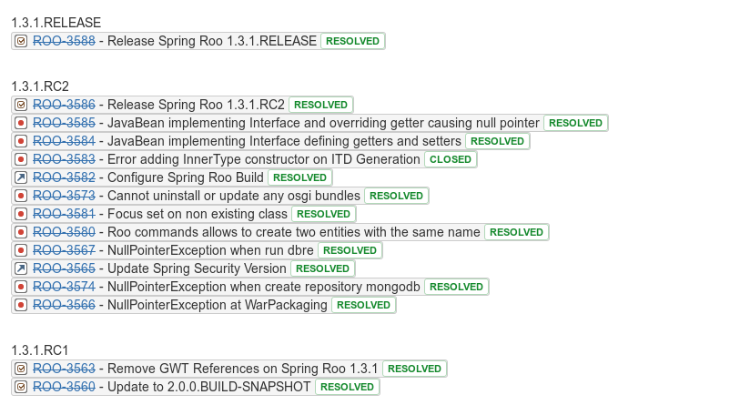

Repository
From Release 3.0.1 this plugin is available from MAVEN CENTRAL REPO If you want stay tune over modification, includes the following repository declaration in your POM
<pluginRepositories>
<!-- IF YOU WANT STAY TUNED ON UPDATE REMOVE COMMENT -->
<pluginRepository>
<id>sonatype-repo</id>
<url>https://oss.sonatype.org/content/repositories/snapshots</url>
<releases>
<enabled>false</enabled>
</releases>
<snapshots>
<enabled>true</enabled>
</snapshots>
</pluginRepository>
</pluginRepositories>
Usage
Basic Declaration
<plugin>
<groupId>org.bsc.maven</groupId>
<artifactId>confluence-reporting-maven-plugin</artifactId>
<configuration>
<endPoint>${confluence.home}/rpc/xmlrpc</endPoint>
<spaceKey>TEST</spaceKey>
<parentPageTitle>Home</parentPageTitle>
<title>my-site-generation-test</title>
<labels>
<label>test</label>
<label>confluence</label>
</labels>
<templateWiki>${basedir}/src/site/confluence/template.confluence</templateWiki>
<wikiFilesExt>.confluence</wikiFilesExt>
<serverId>confluence-server-id</serverId>
<properties>
<prop>the_text_value</prop><!-- SIMPLE TEXT -->
<prop1>classpath:plugin-report.properties</prop1><!-- FROM CLASSPATH -->
<prop2>file://${basedir}/confluence.html</prop2><!-- FROM FILE SYSTEM -->
</properties>
</configuration>
</plugin>
Add labels
<configuration>
<endPoint>${confluence.home}/rpc/xmlrpc</endPoint>
<spaceKey>DOCS</spaceKey>
<serverId>server_id_configured_in_settings_xml</serverId>
<parentPageTitle>Home</parentPageTitle><!-- PARENT PAGE IN THE GIVEN SPACE -->
<title>custom_title</title><!-- PAGE TITLE (default ${project.build.finalName}) - SINCE 3.1.3 -->
<labels>
<label>label_value_1</label>
<label>label_value_2</label>
</labels>
</configuration>
Inject custom properties within template
<configuration>
<endPoint>${confluence.home}/rpc/xmlrpc</endPoint>
<spaceKey>DOCS</spaceKey>
<serverId>server_id_configured_in_settings_xml</serverId>
<parentPageTitle>Home</parentPageTitle><!-- PARENT PAGE IN THE GIVEN SPACE -->
<title>custom_title</title><!-- PAGE TITLE (default ${project.build.finalName}) - SINCE 3.1.3 -->
<properties>
<scm-url>${project.scm.url}</scm-url>
<version>${project.version}</version>
<build>${build.number}</build>
<myprop>classpath:plugin-report.properties</myprop><!-- SINCE 3.2.4 -->
<htmlpage>file://${basedir}/src/main/resources/confluence.html</htmlpage><!-- SINCE 3.2.4 -->
</properties>
</configuration>
Change wiki files extension
<configuration>
<endPoint>${confluence.home}/rpc/xmlrpc</endPoint>
<spaceKey>DOCS</spaceKey>
<serverId>server_id_configured_in_settings_xml</serverId>
<parentPageTitle>Home</parentPageTitle><!-- PARENT PAGE IN THE GIVEN SPACE -->
<title>custom_title</title><!-- PAGE TITLE (default ${project.build.finalName} )- SINCE 3.1.3 -->
<templateWiki>${basedir}/src/site/confluence/template.confluence</templateWiki>
<wikiFilesExt>.confluence</wikiFilesExt>
</configuration>
Authentication Tip
Put yours confluence credential within settings.xml as server
<server>
<id>my_confluence_server</id>
<username>my_user</username>
<password>my_password</password>
</server>Take note that also maven encryption is supported
Use template variables
By default the plugin use an internal template to generate confluence page. You can customize the generated page creating a personal template into folder ${basedir}/src/site/confluence named template.wiki. The template can include all valid confluence contents plus the following built-in variables
| ${project.summary} | project summary |
| ${project.scmManager} | scm information |
| ${project.dependencies} | dependencies |
| ${pageTitle} | title of home page |
| ${childTitle} | title of the current child page |
| ${artifactId} | artifactId |
| ${version} | version |
| ${gitlog.jiraIssues} | list of JIRA issuses, extracted from gitlog since start tag |
| ${gitlog.sinceTagName} | name of version tag to start extract JIRA issues |
Tips & Tricks
- How to refer to an image !${pageTitle}^image_name!.
- How to refer to an child's image within child page !${childTitle}^image_name!.
- How to refer to an attachment [${pageTitle}^attachment_name].
- How to refer to an child's attachment within child page !${childTitle}^attachment_name!.
Git log template variables
Main idea is automated creating of release notes with list of resolved JIRA issues utilizing integration between JIRA and Confluence. Prerequrements:
- Include JIRA issue key in git commit message
- Using git as SCM and using version tags in git
Git log configuration options
- gitLogJiraIssuesEnable. Set it to true for enabling substitution of ${gitlog.jiraIssues} build-in variable. Default value is false.
- gitLogSinceTagName Parse git log commits since last occurrence of specified tag name.
- gitLogUntilTagName Parse git log commits until first occurrence of specified tag name.
- gitLogCalculateRuleForSinceTagName If specified, plugin will try to calculate and replace actual gitLogSinceTagName value based on current project version ${project.version} and provided rule. Possible values are
- NO_RULE
- CURRENT_MAJOR_VERSION. For example 1.2.3 will be resolved to 1.0.0
- CURRENT_MINOR_VERSION. For example 1.2.3 will be resolved to 1.2.0
- LATEST_RELEASE_VERSION. For example, if latest known version from version tags is 1.0.1 and current artifact (not released) version is 2.0.0, it will be resolved to 1.0.1
- gitLogJiraProjectKeyList JIRA projects keys to extract issues from gitlog. By default it will try extract all strings that match pattern (A-Za-z+)-\d+
- gitLogTagNamesPattern The pattern to filter out tagName. Can be used for filter only version tags
- gitLogGroupByVersions Enable grouping by versions tag
- Sample produced output of ${gitlog.jiraIssues} with gitLogGroupByVersions=true
Template example
{info:title=Useful Information}
This page has been generated by [maven-confluence-plugin|https://github.com/bsorrentino/maven-confluence-plugin]
{info}
{toc}
h1. Introduction
{panel}
project description
{panel}
h1. Usage
{panel}
How to use the project
{panel}
${project.summary}
${project.scmManager}
${project.dependencies}